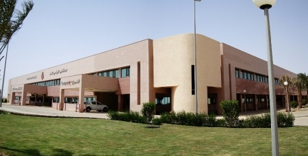
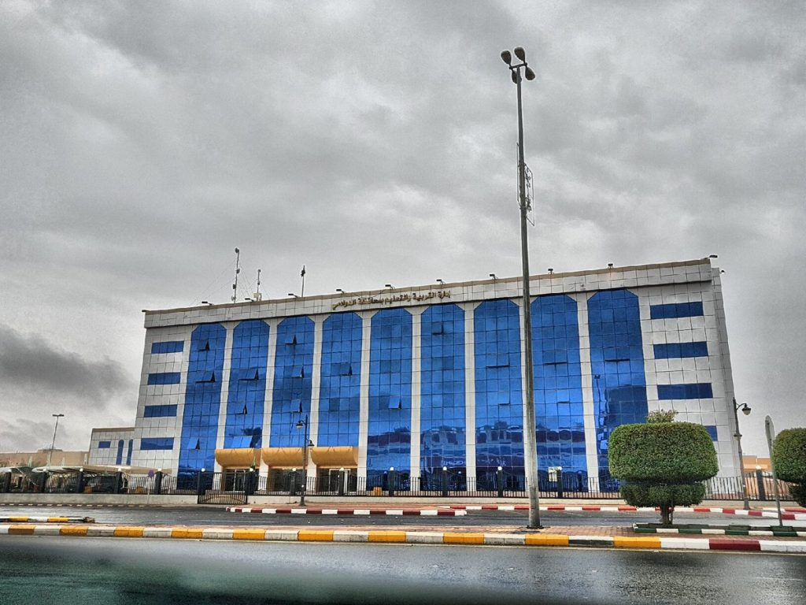
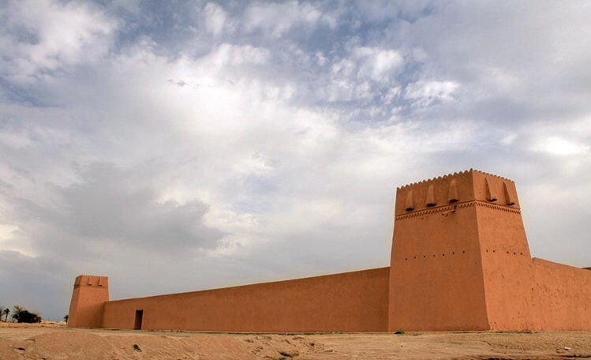
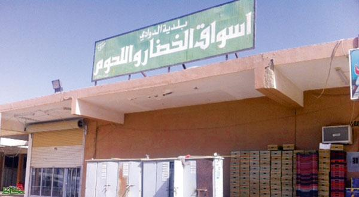
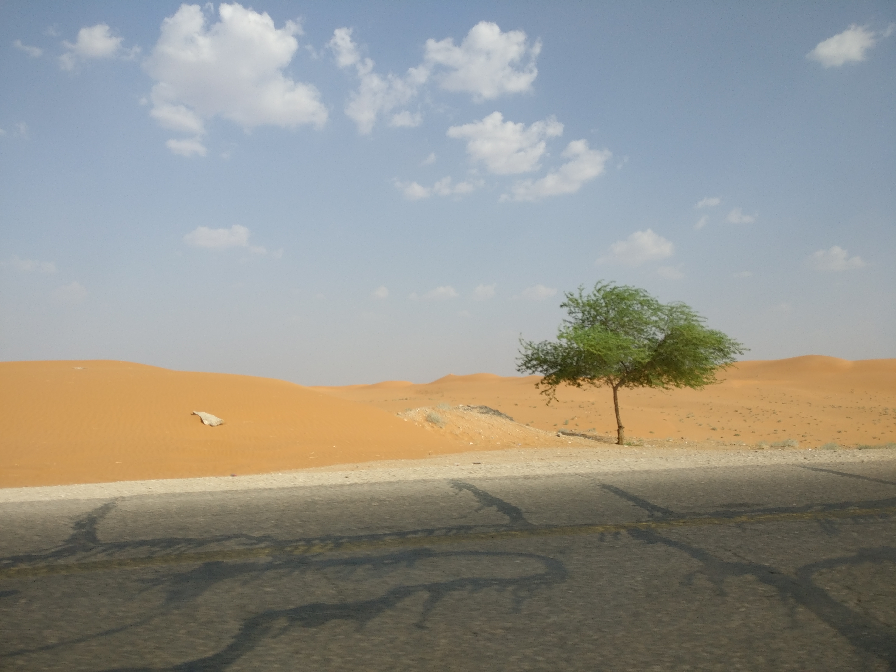
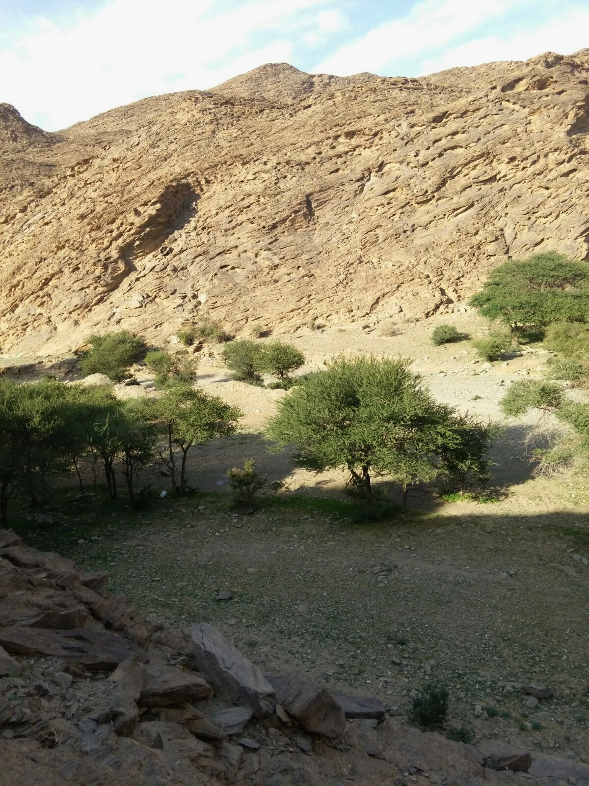

جدارية الدوادمي
بيوت طينية قديمة جنوب الدوادمي
سد الشعراء | جنوب الدوادمي
مستشفى الدوادمي العام الجديد
سد الشعراء | جنوب الدوادمي
سد الشعراء | جنوب الدوادمي
سد الشعراء | جنوب الدوادمي
أسواق اليحيى
الشارع العام شرق الدوادمي
دوار عرجاء

شارع 35

أحد شعيب الدوادمي
الدوادمي قديما
المكان مول | شرق الدوادمي
مسجد على الطراز القديم
بيوت طينية قديمة جنوب الدوادمي

المكان مول | شرق الدوادمي

إدارة التعليم بالدوادمي
حديقة الأمير سلمان

قصر الملك عبدالعزيز

قصر الملك عبدالعزيز
سوق الخضروات | السوق القديم
شارع 35

من طريق الدوادمي - شقراء
بيت شعبي بسيط
وادي الريان جنوب الدوادمي
وادي الريان جنوب الدوادمي
جامع بويريدة | السوق الأبيض

الجامع الكبير | من الداخل
الجامع الكبير | السوق القديم
هضبة طفخة
قصر الملك عبدالعزيز
الشارع العام
الشارع العام | إشارة البنوك
منتزه بجنوب الدوادمي

حديقة الصخرة
حديقة الصخرة

وادي الريان جنوب الدوادمي